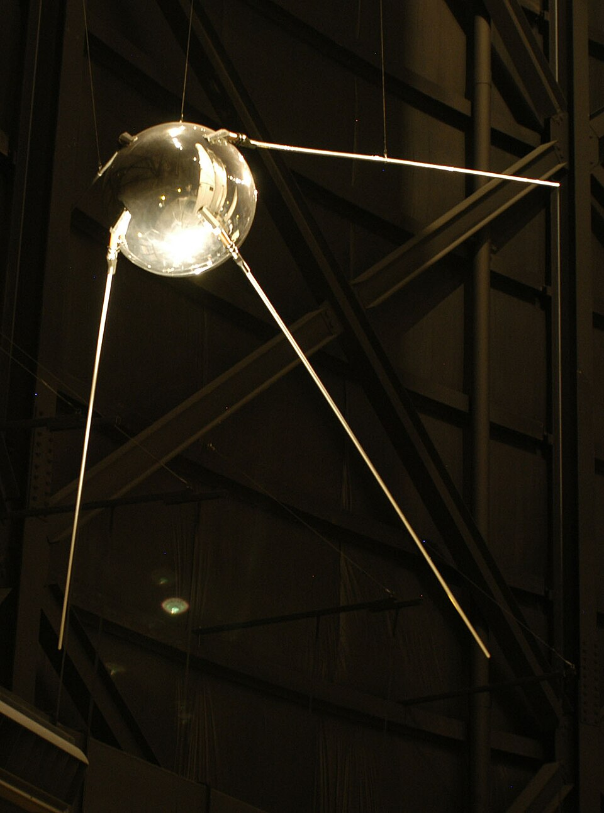
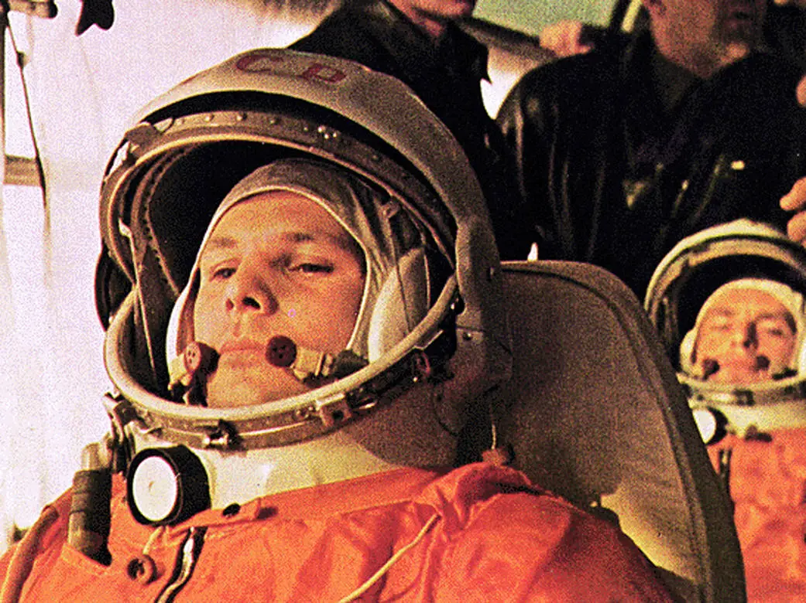
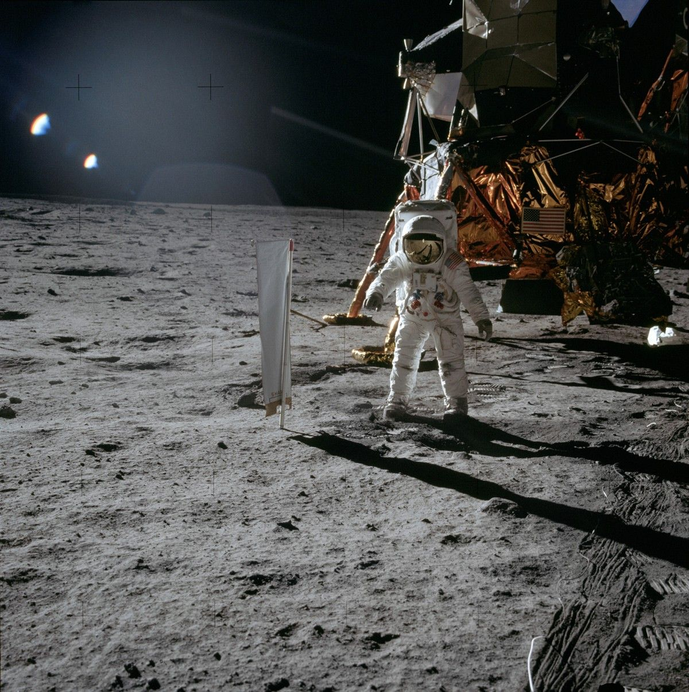
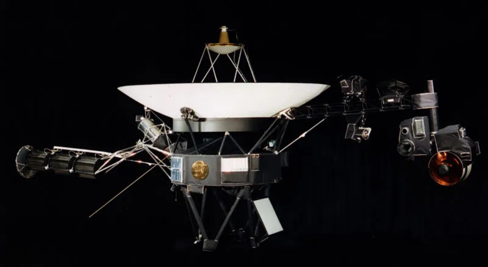
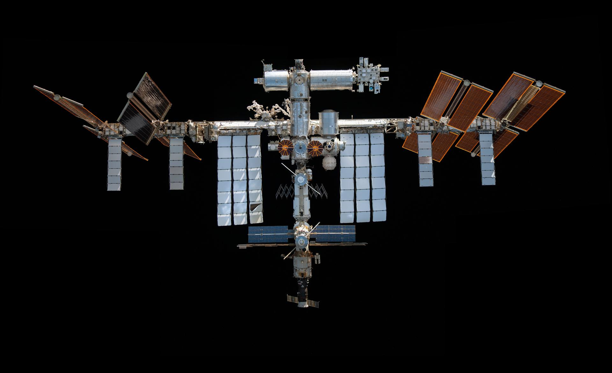
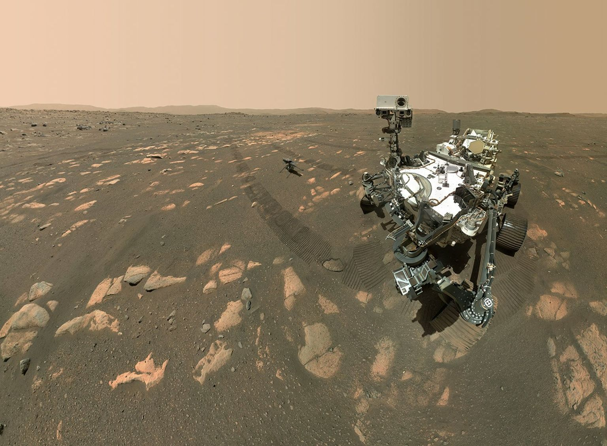

Die Geschichte der Raumfahrt
Die Raumfahrt hat es Menschen ermöglicht, das Weltall genauer zu erforschen. Seit dem 20. Jahrhundert wurden Satelliten, Raumsonden und Menschen ins All geschickt. Viele dieser Missionen haben unser Wissen über die Erde und das Universum verändert.
Spuntik 1

Quelle:https://commons.wikimedia.org/wiki/File:Sputnik_1.jpg
1957 startete die Sowjetunion Sputnik 1. Er war der erste künstliche Satellit, der die Erde umkreiste. Dieser Start gilt als wichtiger Beginn der modernen Raumfahrt.
Juri Gagarin-Der erste Mensch im All

Quelle:https://www.nasa.gov/image-article/making-history-2/
1961 flog Juri Gagarin als erster Mensch ins Weltall. Mit dem Raumschiff Wostok 1 umkreiste er die Erde. Sein Flug war ein bedeutender Meilenstein in der Geschichte der Raumfahrt.
Apollo 11-die erste Mondlandung

Quelle:https://www.nasa.gov/gallery/apollo-11/
1969 landeten erstmals Menschen auf dem Mond. Die Mission Apollo 11 brachte Neil Armstrong und Buzz Aldrin auf die Mondoberfläche. Dieses Ereignis gehört bis heute zu den bekanntesten Momenten der Raumfahrtgeschichte.
Voyager und Raumsonden

Quelle:https://science.nasa.gov/gallery/images-of-voyager/
Raumsonden werden ohne Menschen ins Weltall geschickt. Sie können Planeten, Monde und andere Himmelskörper untersuchen. Bekannte Beispiele sind die Voyager-Sonden, die seit vielen Jahrzehnten Daten aus dem äußeren Sonnensystem senden.
Wusstest du schon?
Voyager 1 ist das am weitesten von der Erde entfernte von Menschen gebaute Raumfahrzeug.
Die internationale Raumstation ISS

Quelle:https://www.nasa.gov/international-space-station/space-station-gallery/
Die Internationale Raumstation ISS umkreist die Erde und dient als Forschungslabor im Weltraum. Astronautinnen und Astronauten aus verschiedenen Ländern leben und arbeiten dort für mehrere Monate.
Marsforschung

Quelle:https://photojournal.jpl.nasa.gov/catalog/PIA24542
Rover Curiosity und Perseverance untersuchen die Oberfläche des Mars. Sie erforschen Gesteine, Klima und Hinweise auf frühere Umweltbedingungen.
Überblick über wichtige Raumfahrtmissionen
- Spuntik 1
- Wostock 1
- Apollo 11
- Voyager 1 und Voyager 2
- internationale Raumstation
- Curiosity
- Perseverance
Meilensteine der Raumfahrt im Vergleich
| Jahr | Mission oder Ereignis | Bedeutung |
|---|---|---|
| 1957 | Spuntik 1 | Erster künstlicher im All |
| 1961 | Wostock 1 | Erster Mensch im All |
| 1969 | Apollo 11 | Erste bemannte Mondlandung |
| 1977 | Voyager 1 und 2 | Erforschung der äußeren Planeten |
| 1998 | ISS | Beginn des Aufbaus der internationalen Raumstationen |
| 2012 | Curiosity | Mars-Rover zur Untersuchung der Marsoberfläche |
| 2021 | Perseverance | Mars-Rover zur Erforschung der Geologie und früherer Umweltbedingungen |